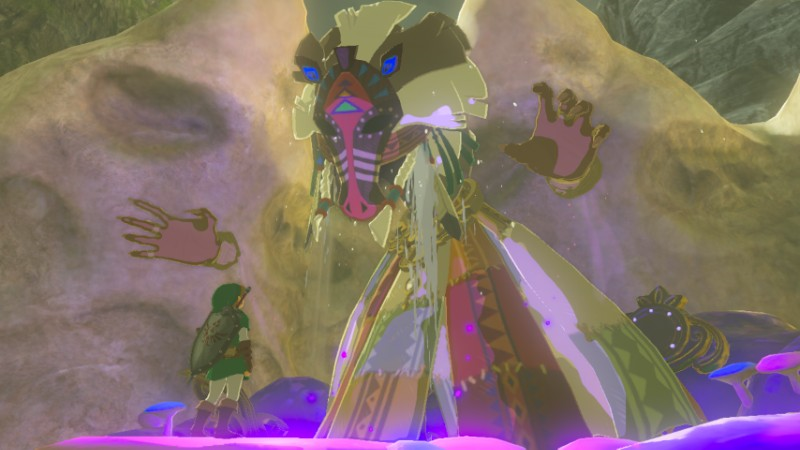

<!DOCTYPE html>
<html style="height: 100%; margin = 0;">
<head>
<title>Zelda Maps Clone</title>

<meta name="viewport" content="width=device-width, inital-scale=1.0">

<link rel="stylesheet" href="scripts/leaflet.css">
<link rel="stylesheet" href="https://cdnjs.cloudflare.com/ajax/libs/leaflet.draw/0.2.3/leaflet.draw.css" />

<script src="scripts/leaflet.js"></script>
<script src="https://code.jquery.com/jquery-1.10.2.js"></script>
<script src="https://cdnjs.cloudflare.com/ajax/libs/leaflet.draw/0.2.3/leaflet.draw.js"></script>

<script src="scripts/leaflet-mapkey-icon-master/dist/L.Icon.Mapkey.js"></script>
<link rel="stylesheet" type="text/css" href="scripts/leaflet-mapkey-icon-master/dist/MapkeyIcons.css" />
    
</head>

<body style="height:100%;">

<div id ="map" style="width:100%; height:100%; background: #888888;"></div>   
   
<script type="text/javascript">

//-------------------------------------------------------------------//
    
// Declare Map Object
var map = L.map('map').setView([0, 0], 3);    

//-------------------------------------------------------------------//
    
// Reference the tiles
    
L.tileLayer('maps/zelda/{z}/{x}/{y}.png',{
    minZoom: 1,
    maxZoom: 6,
    continuousWorld: false,
    noWrap: true,
    crs: L.CRS.Simple, //to make it coordinate system simple
}).addTo(map);

//-------------------------------------------------------------------//
    
// Marker and Popups

//-------------------------------------------------------------------//
    
//Position: MARKER
var marker = L.marker([-62.59, 100.72],{draggable: true}).addTo(map); 
marker.bindPopup('');
    
marker.on('dragend', function(e){
    marker.getPopup().setContent('<b style= display:block;>Link</b>'+'LOCATION: ' + marker.getLatLng().toString()).openOn(map);
});
    
//-------------------------------------------------------------------//

// Reference The Icon
var tower_icon = L.icon.mapkey({icon:"tower",color:'#725139',background:'#f2c357',size:30});
    
var great_icon = L.icon.mapkey({icon:"crown",color:'#725139',background:'#f5bbdd',size:30});
    
var memory_icon = L.icon.mapkey({icon:"cinema",color:'#725139',background:'#a37ec7',size:30});
    
//-------------------------------------------------------------------//
    
// Position: TOWER
    
var marker_tower1 = L.marker([5.39,49.5],{icon:tower_icon}).bindPopup('<b>Lanaryu Tower</b>'+'<p>Lanaryu Tower is North of Kakariko Village, and right next to the bridge you’ll meet Prince Sidon of the Zora. At the top of this tower is a Zora who is stuck and points you in Prince Sidon’s direction, so you’ll almost assuredly climb this tower during your adventure through the main quest. Lanaryu Tower is easy to get to and easy to climb, and you should have no issues with activating it. Activating Lanaryu Tower fills in the map for the Lanaryu Wetlands, Lanaryu Great Spring, Lanaryu Sea, and Zora’s Domain.</p>');
    
var marker_tower2 = L.marker([-42.4,60.1],{icon:tower_icon}).bindPopup('<b>Hateno Tower</b>'+'<p>You’ll run into Hateno Tower just to the West of Hateno Village. Hateno Tower is a bit off the road leading to Hateno Village, and you’ll have to do a bit of mountain climbing to get to it. The climb is a normal one, with no obstacles of note stomping your ascent to the deck of the tower. Activating Hateno Tower fills in the map for Eastern and Southern Necluda (including Hateno Village) as well as part of Mount Lanaryu and the Necluda Sea.</p>');
    
var marker_tower3 = L.marker([-58.0,28.8],{icon:tower_icon}).bindPopup('<b>Faron Tower</b>'+'<p>The hardest part to activating Faron Tower is finding it. It’s tucked in a lower elevation than most towers, so it’s not immediately apparent where it is. In fact, Faron Tower is located in an area of the map you don’t have to visit to complete the main storyline. To find Faron Tower, you want to go South of the Dueling Peaks until you reach a tropical jungle-like area. Once you do, keep going South until you find a river. Near the Northern bank of this river will be Faron Tower. There is an Electric Wizzrobe near the base of Faron Tower, make sure to take it out before you attempt the climb. Activating Faron Tower fills in the map for the Eastern Faron Grasslands and Southwestern Necluda.</p>');
    
var marker_tower4 = L.marker([-54.3,-0.74],{icon:tower_icon}).bindPopup('<b>Lake Tower</b>'+'<p>Lake Tower is one of the easier towers to get. Lake Tower is located South of Lake Hylia and West of Faron Tower. As long as you can make it to Lake Tower, nothing is surrounding it to inhibit your climb. Activating Lake Tower fills in the map for Lake Hylia, Faron Grasslands, and the Faron Sea.</p>');
    
var marker_tower5 = L.marker([-35.17, 22.9],{icon:tower_icon}).bindPopup('<b>Dueling Peaks Tower</b>'+'<p>The Dueling Peaks Tower is most likely the second Sheikah Tower you’ll run into. You’ll find it on the road from Great Plateau to Kakariko Village, and it’s situated just before the Dueling Peaks themselves. This one isn’t too hard to reach, though you’ll have to glide and swim a bit to get there. The climb is normal and isn’t hard as long as you stop at each level to rest before moving higher on the tower. Activating the Dueling Peaks Tower fills in the map for Northwestern Necluda and Southeastern Hyrule Field.</p>');
    
var marker_tower6 = L.marker([-35.15,-12.3],{icon:tower_icon}).bindPopup('<b>Great Plateau Tower</b>'+'<p>The Great Plateau Tower is the tutorial Sheikah Tower and the first Sheikah Tower you’ll climb. You can’t miss the Great Plateau Tower; the main quest won’t progress until you activate it. Activating the Great Plateau fills in the map for the Great Plateau.</p>');

var marker_tower7 = L.marker([-9.6,-17.3],{icon:tower_icon}).bindPopup('<b>Central Tower</b>'+'<p>Central Tower isn’t so hard to climb as long as you can keep enemies off your back. Near the base of Central Tower are several Guardian Scouts that will lock-on and blast you off the tower before you can reach the top. Stealthing to the tower, or taking out the Guardian Scouts before you attempt to climb it are your best bet. Activating Central Tower fills in the map for all of Central Hyrule.</p>');

var marker_tower8 = L.marker([-47.3,-50.8],{icon:tower_icon}).bindPopup('<b>Wasteland Tower</b>'+'<p>The Wastelands Tower is located East of Gerudo Town near the Gerudo Desert Gateway where Gerudo Canyon opens into the Gerudo Desert. Getting to this tower can be imposing as the base is surrounded by bubbling tar. However, it’s easy once you figure out the puzzle. Use Magnesis to move one of the nearby metal boxes in front of the side with three stone slabs leading to the tower like dominoes. As soon as you drop the box into the tar, switch to Stasis and freeze time on the box. You can then use the box as a stepping stone to the slabs. Use the slabs to cross over to Wasteland Tower and climb to the top. Activating Wasteland Tower fills in the map for the Gerudo Desert and Gerudo Town.</p>');
    
var marker_tower9 = L.marker([-37.5,-80.5],{icon:tower_icon}).bindPopup('<b>Gerudo Tower</b>'+'<p>South of Tabantha Tower and North of Gerudo Town, you’ll find Gerudo Tower. This tower is unique in that is cannot be climbed by land. Instead, you must paraglide onto the side of it from the cliffs above. Other than this small unique trait, Gerudo Tower is and easy climb. Activating Gerudo Tower fills in the map for the Gerudo Highlands.</p>');

var marker_tower10 = L.marker([16.6,-38.6],{icon:tower_icon}).bindPopup('<b>Ridgeland Tower</b>'+'<p>This tower is located South-Southeast of Hebra Tower and to the West of Hyrule Castle. Ridgeland Tower is one of the more irritating towers to climb. It’s situated on a small lake with several Electric Wizzrobes nearby. Unlike many other towers that have enemies near them, you can’t just climb to get away from the Wizzrobes because they’ll follow you. Instead, go scorched earth on them and kill them from the shore with the special arrows of your choice. Once they’re out of the way, you can use the small islands in the lake to rest on and regain your stamina as you swim to Ridgeland Tower. Activating Ridgeland Tower fills in the map for Hyrule Ridge.</p>');

var marker_tower11 = L.marker([21.2,-79.4],{icon:tower_icon}).bindPopup('<b>Tabantha Tower</b>'+'<p>The Tabantha Tower is located directly South of the Rito Village and to the West of Hyrule Ridge. Tabantha Tower has calamity goop at the bottom, much like Akkala Tower, but it’s a lot easier to climb than it initially looks. Climb the column to the Southwest of the tower and look to the Northern column. You’ll see an eyeball there that you can shoot with an arrow. Once you’ve taken the eyeball out the goop will disappear from around the base of the northern column, and it will fall into the side of Tabantha Tower. Just use the north column as a ramp and walk right up to the side of Tabantha Tower and climb it. Activating Tabantha Tower fills in the map for the Tabantha Frontier and Rito Village.</p>');
    
var marker_tower12 = L.marker([40.6,-47.7],{icon:tower_icon}).bindPopup('<b>Hebra Tower</b>'+'<p>This tower is located South-Southeast of Hebra Tower and to the West of Hyrule Castle. Ridgeland Tower is one of the more irritating towers to climb. It’s situated on a small lake with several Electric Wizzrobes nearby. Unlike many other towers that have enemies near them, you can’t just climb to get away from the Wizzrobes because they’ll follow you. Instead, go scorched earth on them and kill them from the shore with the special arrows of your choice. Once they’re out of the way, you can use the small islands in the lake to rest on and regain your stamina as you swim to Ridgeland Tower. Activating Ridgeland Tower fills in the map for Hyrule Ridge.</p>');

var marker_tower13 = L.marker([33.2,19.4],{icon:tower_icon}).bindPopup('<b>Woodland Tower</b>'+'<p>Woodland Tower is located directly West of Eldin Tower and just to the North of Crenel Hills. The tower is situated on the site of a former Hyrule Military Training Camp which has been taken over by Moblins, Boboblins, Octoroks, and all sorts of irritating baddies. The area that Woodland Tower sets on has also flooded, meaning you’ll have to use the derelict fortifications spotted about its base to make your way to a point where you can start climbing the tower. Activating Woodland Tower fills in the map for the Great Hyrule Forest and surrounding area.</p>');
    
var marker_tower14 = L.marker([32.2,47.8],{icon:tower_icon}).bindPopup('<b>Eldin Tower</b>'+'<p>Eldin Tower is much easier to climb than Akkala Tower, but the land around it can be quite dangerous. Eldin Tower is directly West of Akkala Tower in the foothills of Death Mountain and is located right at the demarcation where it changes from normal world temperature to absolutely burning hot. Because of this, you have to be careful which way you try to approach Eldin Tower from. The best direction to attempt to reach Eldin Tower from is from the South via Eldin Canyon. Activating Eldin Tower fills in the map for Eldin Canyon, Death Mountain, and the Eldin Mountains.</p>');

var marker_tower15 = L.marker([31.0,72.6],{icon:tower_icon}).bindPopup('<b>Akkala Tower</b>'+'<p>Eldin Tower is much easier to climb than Akkala Tower, but the land around it can be quite dangerous. Eldin Tower is directly West of Akkala Tower in the foothills of Death Mountain and is located right at the demarcation where it changes from normal world temperature to absolutely burning hot. Because of this, you have to be careful which way you try to approach Eldin Tower from. The best direction to attempt to reach Eldin Tower from is from the South via Eldin Canyon. Activating Eldin Tower fills in the map for Eldin Canyon, Death Mountain, and the Eldin Mountains.</p>');
    
//all descriptons credited to : http://www.shacknews.com/article/99239/zelda-breath-of-the-wild---all-sheikah-tower-locations

//-------------------------------------------------------------------//
    
// Position: GREAT FAIRY

var marker_great1 = L.marker([-18.2,43.4],{icon:great_icon}).bindPopup('<b>Great Fairy Cotera</b>'+'');

var marker_great2 = L.marker([28.88,90.26],{icon:great_icon}).bindPopup('<b>Great Fairy Mija</b>'+'');
    
var marker_great3 = L.marker([-62.9,17.49],{icon:great_icon}).bindPopup('<b>Horse God Malanya</b>'+'');
    
var marker_great4 = L.marker([16.19,-77.7],{icon:great_icon}).bindPopup('<b>Great Fairy Kaysa</b>'+'');
    
var marker_great5 = L.marker([-64.09,-106.78],{icon:great_icon}).bindPopup('<b>Great Fairy Tera</b>'+'');
    

//all pictures credited to :s http://zelda.wikia.com/    
    
//-------------------------------------------------------------------//
    
// Position: MEMORIES
    
var marker_memory1 = L.marker([2.17,-5,5],{icon:memory_icon}).bindPopup('<b>1. Subdued Ceremony</b>'+''); 
    
var marker_memory2 = L.marker([21.3,-8.1],{icon:memory_icon}).bindPopup('<b>12. Father & Daughter</b>'+'');
    
var marker_memory3 = L.marker([27.37,-24.21],{icon:memory_icon}).bindPopup('<b>9. Silent Princess</b>'+'');
    
var marker_memory4 = L.marker([-9.5,15.22],{icon:memory_icon}).bindPopup('<b>16. Despair</b>'+'');
    
var marker_memory5 = L.marker([-15.17,-35.59],{icon:memory_icon}).bindPopup('<b>14. To Mount Lanaryu</b>'+'');
    
var marker_memory6 = L.marker([-26.09,-14.96],{icon:memory_icon}).bindPopup('<b>3. Resolve And Grief</b>'+'');
    
var marker_memory7 = L.marker([-39.04,3.86],{icon:memory_icon}).bindPopup('<b>11. Shelter From The Storm</b>'+'');
    

//all video courtesy: youtube.com
    
//-------------------------------------------------------------------//
    
// Layer Groups
    
var lg_tower = L.layerGroup([marker_tower1,marker_tower2,marker_tower3,marker_tower4,marker_tower5,marker_tower6,marker_tower7,marker_tower8,marker_tower9,marker_tower10,marker_tower11,marker_tower12,marker_tower13,marker_tower14,marker_tower15]);

var lg_great = L.layerGroup([marker_great1,marker_great2,marker_great3,marker_great4,marker_great5]);
    
var lg_memory = L.layerGroup([marker_memory1,marker_memory2,marker_memory3,marker_memory4,marker_memory5,marker_memory6,marker_memory7]);
    
var overlays = {
    "Tower" : lg_tower,
    "Great Fairy" : lg_great,
    "Memory" : lg_memory 
};

// Add Layer Control
L.control.layers(null, overlays).addTo(map);
    
//-------------------------------------------------------------------//    

// Draw a line
// Using Leaflet.draw
    
$(document).ready(function() {
  var drawnItems = new L.FeatureGroup();
  map.addLayer(drawnItems);

  var drawControl = new L.Control.Draw({
      edit: {
          featureGroup: drawnItems
      }
  });

  map.addControl(drawControl);
  map.on('draw:created', function (e) {
      var latLngs = $.map(e.layer.getLatLngs(), function(o) {
          return { name: "points", value: o.lat + "," + o.lng };
      });

  map.addLayer(e.layer);
  });
});
//-------------------------------------------------------------------//
    
    
</script> 

</body>
</html>